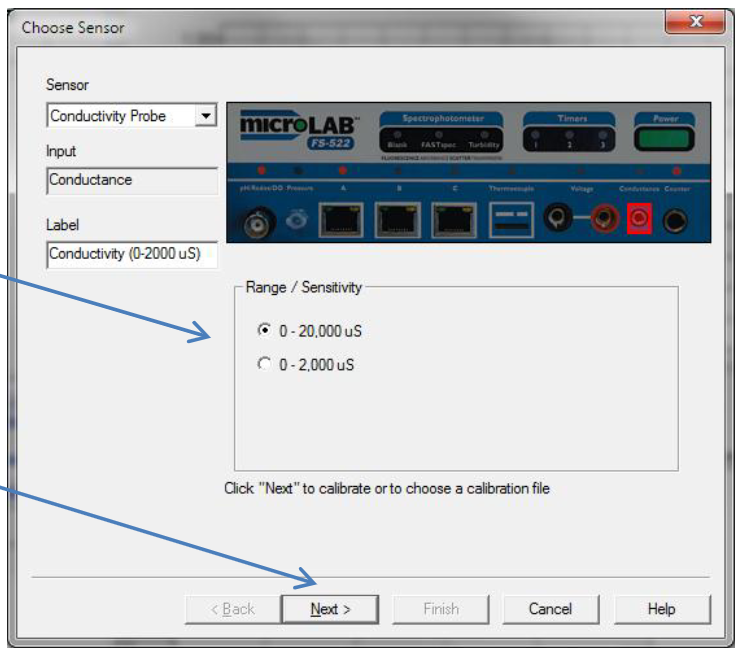

电导率 Conductivity 测量 Measurements 校准说明 Calibration Notes
1 测量电导率 Measuring Conductivity
Conductivity is a measure of the number of mobile ions per unit volume in a solution. At first glance, one might consider this a simple measurement: Place two conducting plates in a solution, connect a battery and current meter, and read the current. The resistance of the solution could be calculated by Ohm's law: R (Ohms) = Voltage (Volts) / Current (Amps). Conductance is simply the reciprocal of resistance. Conductance . The units of conductance used to be Ohm spelled backwards (Mho), but conductance is now expressed in Siemens (S), or micro Siemens, uS.
电导率是衡量溶液中每单位体积中移动离子数量的指标。
乍一看，这似乎是一个简单的测量：将两块导电板放入溶液中，连接电池和电流表，然后读取电流。
溶液的电阻可以通过欧姆定律计算：R（欧姆）= 电压（伏特）/电流（安培）。
R (Ohms) = Voltage (Volts) / Current (Amps).。
电导率 Conductance就是电阻 resistance的倒数 reciprocal。
电导率 （S） = 1/R=A/V=Current (Amps)/Voltage (Volts)
电导率的单位以前是欧姆 Ohm倒过来拼写（Mho），但现在电导率以西门子 Siemens（S）或微西门子 micro Siemens（uS）表示。

Figure 1: An ionic solution has equal numbers of positive ions (red) and negative ions (blue). This model attempts to measure solution resistance by giving electrons to positive ions and picking them up from negative ions.
图1：离子溶液中正离子（红色）和负离子（蓝色）的数量相等。该模型试图通过向正离子提供电子并从负离子获取电子来测量溶液电阻。
The problem with this model is that ions in a solution are free to move, and will quickly migrate - positive ions to the negative plate and negative ions to the positive plate, as shown in Figure 2. Once the ions are all pulled to one side or the other, and once their charges are neutralized, the current in the circuit will fall to zero. This can happen very fast.
这种模型的问题在于，溶液中的离子是自由移动的，它们会迅速迁移——正离子向负极板移动，负离子向正极板移动，如图2所示。一旦离子都被拉到一边或另一边，并且一旦它们的电荷被中和，电路中的电流就会降至零。这会发生得非常快。

图2：由于离子是可移动的，它们会迅速聚集到带相反电荷的极板上。一旦离子被分离并中和，外部电路中的电流就会停止。您无法进行测量。
通过快速交替“电池”电压的极性来解决这个问题。在MicroLab FS-522中，电压以大约每秒1000次的速度从+100毫伏变为-100毫伏。这使得离子保持混合状态。
This problem is solved by rapidly alternating the polarity of the "battery" voltage. In the MicroLab FS-522, the voltage is changed from + 100 millivolts to - 100 millivolts about 1000 times per second. This keeps the ions mixed up.
在每个电压周期快要结束时，MicroLab会非常快速地测量由离子在极板上接受或释放电子引起的电流。这种对随机混合的离子群进行的测量，能够很好地反映溶液中每单位体积的离子数量，即溶液的离子浓度。
Once, right at the end of each voltage cycle, the MicroLab very quickly measures the current caused by ions against the plates accepting or giving up electrons. This measurement, made on a randomly mixed group of ions, is a good measure of the number of ions per unit volume of the solution, or the ionic concentration of the solution.
 图3：MicroLab向电极提供一个小的交流电压。由于这个电压正负持续时间完全相同，在每个施加电压的“周期”结束时，离子完全混合。电流测量正是在这个最大随机性点进行。
图3：MicroLab向电极提供一个小的交流电压。由于这个电压正负持续时间完全相同，在每个施加电压的“周期”结束时，离子完全混合。电流测量正是在这个最大随机性点进行。
Figure 3: MicroLab provides a small alternating voltage to the electrodes. Because this voltage spends exactly as much time positive as negative, at the end of each "cycle" of applied voltage, the ions are completely mixed up. The current measurement is made exactly at this point of maximum randomness.
2 电导电极 The Conductance Electrode
Conductance electrodes are quite simple. They consist of two parallel conducting plates made of a material that will not chemically react with the ions or solvent in the solution. This limits the materials that can be used for conductivity electrodes basically to platinum or gold and carbon (graphite).
电导电极非常简单。它们由两个平行的导电板组成，这些板由不会与溶液中的离子或溶剂发生化学反应的材料制成。这限制了可用材料的范围，基本限于铂、金和碳（石墨）。

Figure 4: The two graphite electrodes are embedded in an epoxy tube. The milled slot exposes the face of the electrode to the solution.
图4：两个石墨电极嵌入环氧树脂管中。铣削出的槽使电极表面暴露于溶液中。
The MicroLab Model 160 conductance electrode uses two parallel graphite electrodes. They are imbedded in a epoxy rod, with a slot milled near the end to allow the solution to contact the bare graphite.
MicroLab 160型电导电极使用两个平行的石墨电极。它们嵌入一个1/2英寸的环氧树脂棒中，末端附近有一个铣削出的槽，允许溶液接触裸露的石墨。
Here's where care of the electrode is important. The manufacturing process produces graphite electrode surfaces that are clean and within about in area from electrode to electrode. This means that, if one wants to compare measurements, you have to calibrate the electrode by immersing it in several standard solutions and making a calibration graph.
电极的保养在此很重要。制造过程产生的石墨电极表面是洁净的，并且电极之间的面积误差约为±10%。这意味着，如果想比较测量结果，必须通过将电极浸入几种标准溶液中并绘制校准曲线来进行校准。
Cleanliness:
The electrode surface has to be very clean. This means that it has to be well rinsed with distilled water before it is used and before it is stored. If ionic compounds (salts) are allowed to dry on the electrode, it can be cleaned by soaking for several hours in dilute HCl , at room temperature. Then rinse very well with distilled water. It won't work if it is not clean.
洁净度Cleanliness：
电极表面必须非常洁净。这意味着在使用前和存放前，必须用蒸馏水彻底冲洗。如果离子化合物（盐类）在电极上干涸，可以通过在室温下用稀盐酸浸泡数小时来清洁。然后用蒸馏水彻底冲洗。如果不洁净，它将无法工作。
Hydration:
The surface of the electrode has to be covered with water molecules prior to placing it in the test solution. You can do this by soaking the electrode in distilled water for several minutes before use.
水合 Hydration：
电极表面在放入测试溶液之前必须被水分子覆盖。您可以通过在使用前将电极浸泡在蒸馏水中几分钟来完成此操作。
Bubbles:
Air bubbles can form on the surface of the graphite electrode as you transfer it from one solution to another. You can stir with the electrode or even tap it gently against the side of the beaker to get rid of the bubbles.
气泡 Bubbles：
在将电极从一种溶液转移到另一种溶液时，石墨电极表面可能会形成气泡。您可以摇动电极或甚至轻轻敲击烧杯侧面来去除气泡。
3 校准 Calibration
Step1
Turn on your MicroLab FS-522 and start the software. Select the "MicroLab Experiment" icon.
打开您的MicroLab FS-522并启动软件。选择“MicroLab Experiment”图标。

Step2
Now click the "Add Sensor" button, and choose "Conductivity Probe".
现在点击“添加传感器Add Sensor”按钮，并选择“电导率探头Conductivity Probe”。
2.1添加传感器Add Sensor

2.2电导率探头Conductivity Probe


Step3
Click on the conductance input, and then select either the “High Range” (0-20,000 uS) or the “Low Range” (0-2000 uS).
请点击电导输入 conductance input，然后选择“高量程 High Range”（0-20,000 µS）或“低量程 Low Range”（0-2000 µS）。
Plug your conductance probe into the MicroLab FS-522.
将电导探头插入 MicroLab FS-522。
Then click “Next” to get ready to calibrate the sensor.
然后点击“下一步”，准备校准传感器。

Step4
Now Click "Perform New Calibration". You are ready to start your calibration process.
现在点击“执行新校准Perform New Calibration”。您已准备好开始校准过程calibration process。

4 配制校准溶液 Mixing Calibration Solutions
Use the calibration solution menu below to mix up several (at least three) standard solutions in a range specified by your instructor. You can distribute this work around the lab, each group mixing up one calibration standard. You can make "halfbatches" with 500 mL of water and half the amount of salt.
使用下面的校准溶液菜单calibration solution menu，配制几种（至少三种）在您老师指定范围内的标准溶液 standard solutions。您可以将这项工作分配给实验室的各个小组，每个小组配制一个校准标准。您可以使用500毫升水和一半量的盐来制作“半批次half-batches”
溶液表1 电导标准溶液的配制 Preparation of Conductance Standards
Grams of NaCl per liter (1000.0 mL) of deionized or distilled water:
Table 1 每升（1000.0 mL）去离子水或蒸馏水中的NaCl克数：
| 2.000克 | 3860uS |
|---|---|
| 1.500克 | 2930uS |
| 1.000克 | 1990uS |
| 0.500克 | 1020uS |
| 0.200克 | 415uS |
| 0.150克 | 315uS |
| 0.100克 | 210uS |
| 0.050克 | 105uS |
Conductance values are at
电导率值在 下测得
Step5
Click "Add a Calibration Point" to prepare to calibrate your conductance electrode.
点击“添加校准点Add a Calibration Point”以准备校准您的电导电极 conductance electrode。

Step6
This screen will come up. The display with a green bar is a rate-of-change meter. It centers when the probe is in equilibrium and stable. The Sensor History graph shows a history of the calibration process.
此屏幕将会出现。带有绿色条的显示是变化率表 rate-of-change meter。当探头处于平衡 equilibrium并稳定stable时，它会居中centers。传感器历史图表 Sensor History graph显示了校准过程calibration process的历史记录history。

Step7
If the red rate of change needle moves too fast, you can reduce the sensitivity by clicking the "Show Advanced Calibration Controls" box, and then adjusting the slider to an appropriate sensor sensitivity.
如果红色变化率指针移动过快，您可以通过点击“显示高级校准控制Show Advanced Calibration Controls”框，然后调整滑块到适当的传感器灵敏度来降低灵敏度。
Enter the actual value of the standard in the "Actual Value" box. Place the conductance electrode in your conductivity standard, and wait for it to equilibrate. You can watch the history graph go up and stabilize. Stir with the electrode until this graph stabilizes and the needle settles in the green "equilibrium" bar on the rate of change meter. Then click "OK".
在“实际值Actual Value”框中输入标准的实际值。将电导电极放入您的电导标准溶液中，并等待其达到平衡。您可以观察历史图表上升并稳定下来。用电极搅拌Stir，直到此图表稳定且指针 needle在变化率表上的绿色“平衡 equilibrium”条中稳定settles下来。然后点击“确定OK”。

Step8
The calibration graph will come up, with one calibration point added:
校准图将出现，并添加了一个校准点：
Repeat this process with at least two additional standards. You need at least one more standard than the order of the line fit you choose to use. If you do a linear fit, two points define the line and the third point proves that you are right if it is on the line. If you do a second-order polynomial fit, you need four points. Three will define the line, and the fourth will prove that you are right.
使用至少两个额外的标准溶液重复此过程。您需要的标准溶液数量至少要比您选择使用的拟合线阶数多一个。如果您进行线性拟合，两个点定义一条线，而第三个点（如果在线上）则证明您是正确的。如果您进行二阶多项式拟合，则需要四个点。三个点将定义该曲线，而第四个点将证明您是正确的。
Step9
When you are done, click "Accept and Save this Calibration". You will have to save the file - it should default into the calibration folder in your MicroLab software folder. Make sure you know
完成后，点击“接受并保存此校准”。您需要保存文件——它应该默认保存到MicroLab软件文件夹中的校准文件夹。请确保您知道它保存的位置。

Step10
Here is a sample calibration graph. This graph used a linear line fit, and produced a correlation coefficient of 0.999935 - Four 9's is very good. A perfect fit would produce a correlation coefficient of 1.0000.
这是一个示例校准图。此图使用了线性拟合 linear line fit，相关系数 correlation coefficient为0.999935——四个9是非常好的。完美拟合会产生1.0000的相关系数。

Step11
Once the calibration graph is saved, you are ready to do your experiment. You can use this calibration with the same probe in a future experiment.
校准图保存后，您就可以开始实验了。您可以在未来的实验中将此校准与同一探头 probe一起使用。